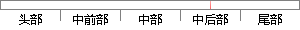

k)就是数据点x_i由component k生成的概率。
片段位置图

相似结果|
相似片段 1：中得到的r(i，k)就是正确的“数据Xi由Componentk生成的概率”。集中考虑所有的数据点，现在实际上可以看作Component生成了y(1，尼)五，y(2，k)xz?，r(N，k)xⅣ这些点
相似片段 2：基于概率统计的方法是求基聚类结果数据在统计上的特征，基聚类的权重与其置信度成正比。该方法是在基聚类结果的基础上用簇密度计算出数据点对间的距离，并生成H个component矩阵，然后对H个
相似片段 3：聚类获得M个Component(对应了M个Cluster)，最后应用回归模型进行预测。聚类过程中数据点的生成需要满足以下条件：1)每个数据点都是在所有类别区域中随机生成。2)每个数据点属于类别i的概率
|
※ 片段修改建议 ※
近似词参考：- 就是：便是
- 生成：天生
- 概率：几率
系统自动生成语句：k)便是数据点x_i由component k天生的几率。
注：本片段修改建议为系统自动生成，仅供参考。